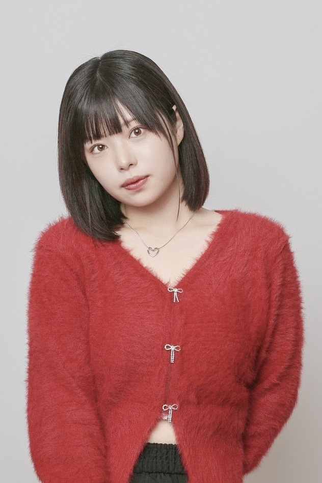

| 項目 | 旧（V1企画書） | 新（V2 / 226打合せを経て） |
|---|---|---|
| コンセプト | 盗み聞き会話劇 | FIRST ACT ワンカット会話劇 |
| 撮影形式 | 未定 | ワンカット・ワンテイク（手持ちカメラ） |
| 場所設定 | 居酒屋/カフェ（未定） | 昼カフェ・夜バー（同一場所） |
| 画角 | 未定 | 縦型（Instagram / TikTok優先） |
| 脚本体制 | 未定 | 十河が20本ベースを作成 → メンバーFB |
| 編集 | AI字幕活用 | 最小限（30分以内。字幕程度） |
| 舞台展開 | 没入型公演 | FIRST ACT LIVE |
| キャラ設定 | 詳細ペルソナ | 年齢＋職業程度。ガチガチにしすぎない |
「あの卓が気になる」は台本ベースで編集で作り込むスタイル。ワンテイクの緊張感で差別化。THE FIRST TAKEが歌でやったことを、演技でやる。
1日4〜5時間の撮影で5〜10本撮り溜め可能。編集は字幕を入れる程度で30分以内。月1回の撮影で1〜2ヶ月分のストックが確保できる。
撮り直しが効かない環境で演じることは、役者にとって最高のトレーニングであり、実力の証明になる。映画・ドラマへのキャスティングにもつながる。
手持ちの縦型映像はスマホ視聴にネイティブ。UGC風の親近感と、プロの演技力のギャップがバズを生む。
撮影・照明スタッフ不要。監督一人で撮影可能。色補正なし、撮って出し。コスト的にも「あの卓」より圧倒的にライト。
SNSで最も重要なのは投稿頻度。週1投稿を無理なく続けられる体制こそが成功の鍵。完璧主義は敵。

SNSで配信している「FIRST ACT」のフォーマットを舞台に持ち込む。ワンカットの緊張感を、生の演技で観客に届ける。「THE FIRST TAKE」のライブ版。
半年間のSNS運用でキャラクターとファンを育て、「あの人たちの演技を生で見たい」という需要を作る。舞台はSNSの延長であり、集大成。
これまで撮った映画作品が全て映画祭でグランプリを受賞。演出・演技指導・編集のスキルが高く、限られた時間で最大のパフォーマンスを引き出せる。
フェイクとリアルの境界。最先端の皮肉。
情緒重視 vs 超実学主義でコメント激論。
Z世代の効率至上主義に対する反論。
20代全員が共感。コメント欄が荒れるやつ。
電子マネー時代の1円単位割り勘の是非。
電話恐怖症の若者vs文字入力面倒な世代。
サステナブルと所有欲のぶつかり合い。
愛も仕事もアウトソーシングな現代。
若者の固定費が削れないリアルな恐怖。